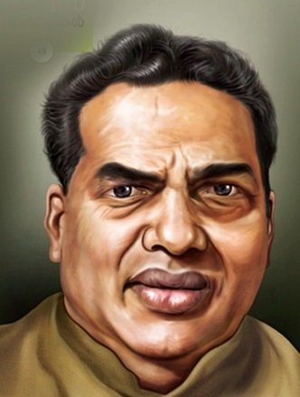

Our Story
Kerala's most beloved co-operative — six decades of tradition, taste and worker-owned pride at the heart of Malabar.
History
The Indian Coffee House was started by the Coffee Board in the early 1940s during British rule. When the Board dismissed its workers in the mid-1950s, the great communist leader Com. A.K. Gopalan (A.K.G.) organised them into co-operative societies across India.
Our Kannur society was registered on 2 July 1958. The first outlet opened in Thalassery on 7 August 1958. Today we operate 30 branches across 6 districts of Northern Kerala with a turnover of Rs. 89.9 Crore in 2022-23.
Get in Touch
Milestones
The Indian Coffee House concept began under the Coffee Board during British rule, serving coffee across India.
When the Coffee Board dismissed its workers, Com. A.K. Gopalan (A.K.G.) organised them into worker-owned co-operative societies across India.
The Indian Coffee Workers Co-operative Society Ltd. No. 4317 was officially registered in Kannur.
The very first Indian Coffee House branch under the Kannur society opened its doors in Thalassery.
Today the society runs 30 branches across 6 districts of Northern Kerala, with a turnover of Rs. 89.9 Crore and total assets of Rs. 27 Crore, backed by 671 society members.
Leadership